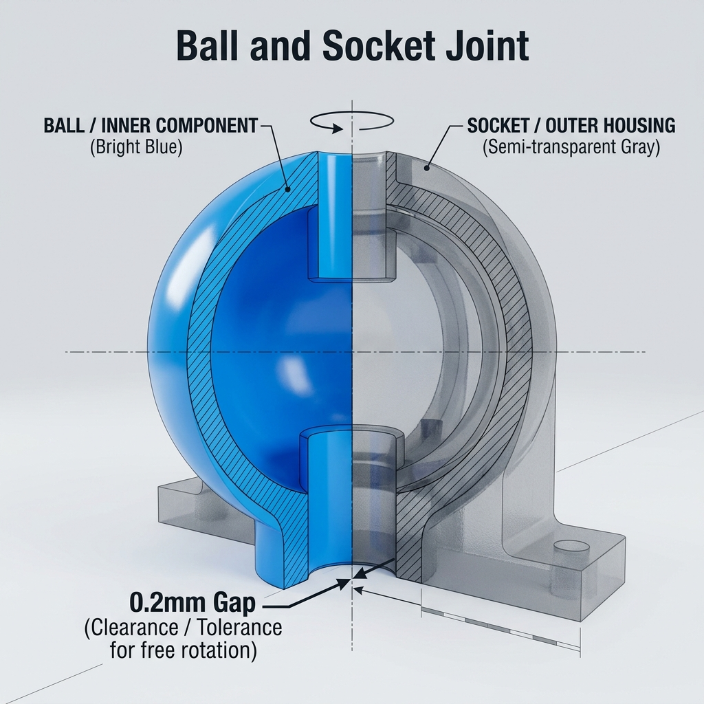

给你的模型注入“生命”，让它动起来！
为什么 3D 打印的关节需要“缝隙”？
教你在 Bambu Studio 里“套娃”：
1. 做球头：半径设为 5mm。
2. 建球窝：设为一个更大的球壳。
3. 挖空位：添加半径为 5.5mm 的负零件。
💡 秘诀：负零件必须包裹住球头，但要稍微大一点点！

如何确保球头在打印中不掉下来？
像有机树枝一样托住圆润的底部。
调大支撑间隙，让关节清理更轻松。
更细腻的表面，转动起来不卡顿。
你的小人即将获得自由！🤖